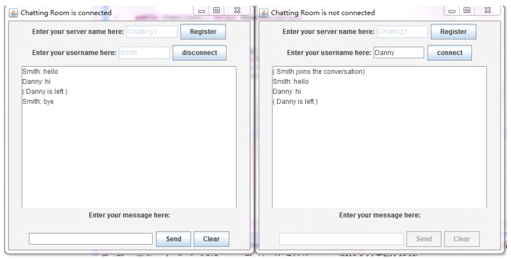

Connection Characteriser App
Group Design Project
Tool used: Objective C, UML, Xcode, PhotoShop, FastSocket.
A scalable and well-designed mobile application actting as an administrative tool to allow users to identify the status of the network currently the devices enjoy. It makes use of several implementations to eliminate the need of a dedicated server, deployed on iOS, and also aims to be useful for users with different understanding of the network. This project was conducted on behalf of JANET, a private, UK government-funded organisation which provides computer network and related collaborative services to UK research and education.
The application targets non-technical and technical users and returns the suitability of popular network services. Several network characteristics are addressed: port scan, IPv6 availability, jitter, RTT and bandwidth.
The application targets non-technical and technical users and returns the suitability of popular network services. Several network characteristics are addressed: port scan, IPv6 availability, jitter, RTT and bandwidth.
Project available on request.
Community Recommender System

Third Year Individual Project
Tool used: HTML, JavaScript, CSS, Node.js, MongoDB, AJAX, JQuery, UML, EJS, Express, Bootstrap
An Inter-office networking web application, providing a highly integrated system combining social, business and commercial content. This application provides three kinds of user: super admin, administrator and normal user. As for the super admin, there are four main features, such as item/list management, rating/receiving recommended items/lists, give privileges and user/admin management. For the administrators, they have similar privileges to super admin without having user/item management. The normal users are mainly for rating and receiving recommended items/lists.
Code available on request.
Cloud Gaming
Interactive Multi-media System Research
Keywords: Cloud computing, gaming
A academic research paper based on cloud gaming research. Cloud technology is becoming a key part of daily life whereas people use it to either store data or run computation. As a popular entertainment, gaming has been developed increasingly in the last few decades. Because of the popularity of mobile devices, gaming industry eager to find a way to share more markets. Cloud gaming is the answer to the solution. This paper explores how gaming industry can be deployed into cloud computing and the effects of cloud gaming to users.
Document available on request.


Chatting Room

Distributed Computing
Tool used: Java, Eclipse, Java RMI, GUI
A basic and easy-use chatting room which makes use of Java RMI service to deliver message exchage between users. Users are required to join a specific room (server) to begin communication. Only users in the same server receive the messages from the same domain.
Code and report available on request.
Virtual Reality Head-mounted Technologies - A Review of Oculus VR
Interactive Multi-media System Research
Keywords: Virtual Reality, Oculus VR, Headset, Technology, Platform, Development Kit, Display, Sensors, Virtual Reality Based Games (VRGs), Movement Tracking.
A academic research paper based on virtual reality head-mounted technologies research, mainly on Oculus VR. Augmented Reality is becoming a popular topic recently since Google has developed their AR product -- Google Glasses. Oculus VR is one of the top companies focuses on developing advanced head-mounted to provide excellent user experience in various areas, such as military training and education. This paper represents the technologies behind the production -- Oculus DK2, and the challenges it may faces.
Document available on request.